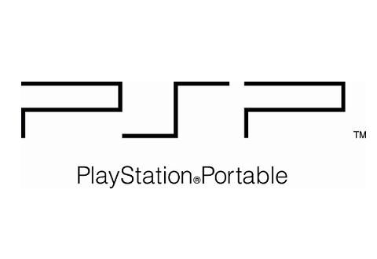

PSP (2004-2014)
Aprende sobre los diversos modelos de la Playstation Portable, sus specificaciones, y cómo continúa hoy en día.

PSP Go. Viviendo en el futuro
La PSP Go se adelantó a un futuro digital, aunque no fuese un éxito comercial, sony la calificó como un "experimento satisfactorio". En 2009, la idea de una consola completamente digital ni se teorizaba en la cabeza de muchos, pero aún así Sony decidió lanzar tal cosa, aunque su impacto no se sintiese nunca.

Portable en la pantalla grande.La respuesta de sony a las cajas de streaming
La PSTV fue un experimento curioso, en vez de hacer una caja desde cero, ¿porqué no adaptar algo que ya existía? Eso mismo dijo sony, el cual decidió adaptar la fallida PSVita a una caja de streaming, donde podías no solo ver netflix o youtube, sino también jugar a clásicos de PS.